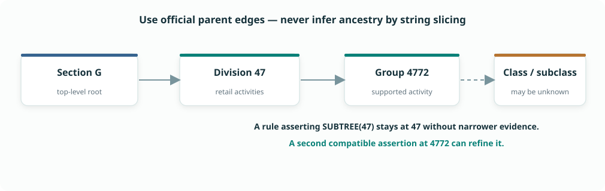

Taxonomy fusion and conservative backoff
PlaceType PH fuses assertions as sets of admissible rooted subtrees. This preserves what reviewers actually claimed and prevents a single sparse taxonomy branch from creating unsupported specificity.
The mathematical object
Let a taxonomy be a rooted forest T = (V, E) with explicit parent edges. Let D(r) contain a root code r and all its descendants. Then a reviewed mapping denotes:
EXACT(r)→ a reviewed assertion selecting one coder; the current fusion implementation still represents it as a rooted constraint, so it is not globally enforced as a singleton set during intersection;SUBTREE(r)→ the admissible subtreeD(r), where the accepted reported code remainsruntil narrower evidence appears;UNION(r₁,…,rₖ)→ the union of those rooted subtrees;NOT_ACTIVITY/UNCODEABLE→ no coded subtree; eligibility policy handles them separately.
The implementation uses normalize_roots() and intersect_subtrees() to operate on asserted roots without materializing every leaf. The EXACT/SUBTREE distinction remains meaningful in crosswalk validation and some policy gates, but the fusion operation currently handles both as rooted constraints; this is an important interpretation boundary, not a strict exact-code constraint solver. With compatible roots, the intersection preserves the descendant. With disjoint roots it is empty.

Dependent groups and independent groups
Within a dependency group, compatible constraints intersect. A dependent disagreement widens to the union of declared roots and adds DEPENDENT_CONFLICT:<group>; the operational PSIC Rev. 5 classifier may then abstain explicitly. Across independent groups, disjoint admissible sets are a true semantic conflict; the implementation does not invent a common activity just to fill a field.
A deliberately narrow sibling exception
When independent PSIC evidence differs only between immediate sibling nodes, the package can back off exactly one level to their shared parent, provided all other asserted roots are compatible ancestors and that parent is below section level.
Here the output may be parent 4711 with INDEPENDENT_SIBLING_BACKOFF. The same rule does not convert disagreement between unrelated divisions into a meaningless section-level answer. This is a specific implemented policy, not ordinary LCA applied to every conflict.
Why leaf expansion is wrong
Consider a partially loaded division whose only loaded descendant is one subclass. Mapping a label to that division says the label supports the division; it does not say that the reviewer discovered the only descendant. Expanding to leaves and taking an LCA would incorrectly output a subclass. Operating on declared subtree roots preserves the epistemic ceiling of the evidence.
Status semantics
| Fusion status | Meaning | Normal coding consequence |
|---|---|---|
EMPTY |
No coded mapping survived. | No code; optional fallback may run. |
SINGLE |
One mapped evidence item. | The asserted code is retained. |
NESTED |
Compatible evidence at different depths. | Deepest supported asserted root. |
INTERSECT |
Intersecting compatible constraints; includes sibling backoff branch. | Supported code or bounded backoff. |
UNION |
Several admissible branches remain. | Candidate set and unresolved outcome where no single root is defensible. |
CONFLICT |
Independent assertions are disjoint. | Abstain; preserve candidates and flags. |
The final classifier's status vocabulary is broader than FusionStatus: eligibility, compound sources, administrative decisions, LLM fallbacks and entity-match reviews can alter the returned status without changing the meaning of the fusion stage.
Failure modes and alternatives rejected
- Majority vote: not used; dependent providers would be double counted.
- Arbitrary LCA: not used for incompatible independent branches; a common root can be too general to support one economic activity.
- Numeric prefix ancestry: not used; sections are letters and version changes can recode categories.
- Always choose longest code: not used; the longest match can be unsupported, or exact/union semantics may differ.
Implementation: fusion.py · test_fusion.py.